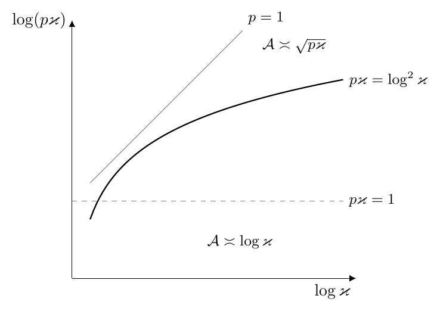

SH Large-batch drift for a general spectrum
- SH.1 The results in brief
- SH.2 Standing setup
- SH.3 The limit profile
- SH.4 Scalar bounds
- SH.5 The oversampled limit law
- SH.6 The square case: the square-root law and head modes
- SH.7 Tail modes and acceleration
- SH.8 Power-law spectra, the identity and the normalization
This section computes the half-anisotropic drift coefficient \(\mathfrak d_i=\mathfrak d(\mu_i,1)\) of Corollary SC.2 when the batch oversamples the input dimension, for an arbitrary output spectrum. The main result, Theorem SH.1, shows that when \(3(1-\bmom^2)\Nin<B\) the coefficient equals \(\sqrt{B_{\rm eff}/\Nin}\) times a profile \(\mathfrak d^{\rm os}\) of the empirical spectral distribution of \(\Sigmaout\), up to a factor in \([1-\epsilon_{\rm os},(1-\epsilon_{\rm os})^{-1}]\) with \(\epsilon_{\rm os}=3(1-\bmom^2)\Nin/B\). This holds at every normalized ridge, including zero ridge, for every eigenvalue, every spectrum and every pair of dimensions. Corollary SH.1 reads the result as the expected regularized update.
Every statement except Corollary SH.1 concerns the deterministic coefficient at a fixed finite dimension. No statement concerns the algorithm at zero ridge, a joint limit in the aspect ratio and the dimension, or the volatility.
SH.1 The results in brief
This subsection states the results informally, in the square case \(\Nout=\Nin=N\) at zero ridge, and points to the formal statements.
The square-root law and packed modes. When \(B_{\rm eff}\) exceeds \(3(1+\bmom)^2N\), the drift coefficient of every mode is at most the square-root law,
\[
\mathfrak d_i\lesssim\sqrt{\frac{B_{\rm eff}}{2N}}\,\sqrt{\mu_i},
\]
and it is within a constant of this law whenever the mode is packed: a positive fraction \(\delta\) of all eigenvalues lies below a fixed multiple \(K\mu_i\) (Definition SH.2 and Corollary SH.2). The constant is \(0.94\sqrt{\delta/(1+K)}\). Packing at the smallest eigenvalue implies packing at every mode, and every mode of a power law is packed (Remark SH.3). In expectation the update is then \(\sqrt{B_{\rm eff}/(2N)}\) times a square-root preconditioner applied to the error, on every packed mode (Corollary SH.1).
The exact law. The two-sided bound comes from an exact formula (Theorem SH.1 and Lemma SH.8),
\[
\begin{gathered}
\mathfrak d_i=\vartheta_i\,\sqrt{\frac{B_{\rm eff}}{2N}}\,\sqrt{\mu_i}\;\chi(\mu_i),\\
\chi(\mu)=\int_0^\infty\frac2\pi\frac{\sqrt y}{(1+y)^2}\sqrt{1-m(\mu y)}\,\dif y,
\qquad
m(c)=\frac1N\sum_k\frac{\mu_k}{c+\mu_k},
\end{gathered}
\]
with \(\vartheta_i\) within a factor \(1\pm O(N/B_{\rm eff})\) of one. The efficiency \(\chi(\mu)\in(0,1]\) has a probabilistic meaning (Remark SH.2): \(1-m(c)\) is the fraction of the spectrum below \(c\) after each eigenvalue is multiplied by an independent random factor, and \(\chi(\mu)\) is an average of its square root around the level \(\mu\). It is bounded by an explicit count,
\[
\mathsf s(\mu)\le\chi(\mu)\le\sqrt{\mathsf s(\mu)},\qquad
\mathsf s(\mu)=\frac1N\sum_k\frac{1+2\sqrt{\mu_k/\mu}}{\big(1+\sqrt{\mu_k/\mu}\big)^2}
\]
(Lemma SH.11), where each eigenvalue contributes about \(1\) if it is below \(\mu\) and about \(2\sqrt{\mu/\mu_k}\) if it is far above.
Head and tail modes. The efficiency tends to one exactly on head modes, which lie above all but a vanishing fraction of the spectrum (Proposition SH.1). A mode that lies far below most of the spectrum is a tail mode: its drift is of gradient-descent order up to a logarithm (Proposition SH.2). For the slowest mode, the gain over gradient descent lies between the logarithm and the square root of the condition number, according to how much of the spectrum sits near the smallest eigenvalue (Corollary SH.3 and Corollary SH.4). For power laws every mode keeps the square-root law up to a constant depending only on the exponent, so the slowest mode gains the square root of the condition number (Corollary SH.5).
SH.2 Standing setup
Data and scales. Throughout the section the input covariance is \(\Sigmain=\Id_{\Nin}\), and the output covariance is \(\Sigmaout=\sum_{k=1}^{\Nout}\mu_k\,u_k\tensor u_k\), positive semidefinite with orthonormal eigenvectors \((u_k)\). The integers \(\Nout,\Nin,B\ge1\) are arbitrary. The momentum \(\bmom\in[0,1)\) is fixed, the weights are the EMA weights \(\emaw j=(1-\bmom)\bmom^j\) of (SA.18), and
\[
\sw2=\frac{1-\bmom}{1+\bmom},\qquad
B_{\rm eff}\defeq\frac{B}{\sw2},\qquad
\gin=\frac{\Nin}B,\qquad \gout=\frac{\Nout}B,\qquad
r\defeq\frac{\gout}{\gin}=\frac{\Nout}{\Nin}.
\]
The effective batch \(B_{\rm eff}\) is that of Section 3. The largest weight is \(\emaw0=1-\bmom\), and \(\emaw0^2/\sw2=1-\bmom^2\). For a function \(\phi\) on \([0,\infty)\) we write \(\phi(\Sigmaout)\defeq\sum_k\phi(\mu_k)\,u_k\tensor u_k\).
The branch and the drift coefficient. For \(s>0\), \((\sigma,\tilde\sigma,\tilde s_1,s_1,q)(-s)\) denotes the solution of the weighted system (SB.2) for the EMA weights and the spectral measures \(\nu_{\mathrm{out}}=B^{-1}\sum_k\delta_{\mu_k}\) and \(\nu_{\mathrm{in}}=\gin\,\delta_1\) of (SA.41). It exists and is unique by Theorem SB.1(i), applied with \(C_\Sigma=\max(1,\norm{\Sigmaout})\) and \(\gamma_\star=\max(\gin,\gout)\), and it is continuous in \(s\) by Theorem SB.1(ii). Since \(\nu_{\mathrm{in}}\) is a point mass, the system reads, with every quantity evaluated at \(-s\),
\begin{equation}\tag{SH.1}
\sigma=\int\frac{x\,\nu_{\mathrm{out}}(\dif x)}{s+\tilde s_1x},\qquad
\tilde\sigma=\frac{\gin}{s+s_1},\qquad
q=s\sigma\tilde\sigma,\qquad
\tilde s_1=s\tilde\sigma\,\Fw(q),\qquad
s_1=s\sigma\,\Fw(q).
\end{equation}
The functions \(\Jfun\), \(\Fw\) and \(\Lw\) are those of (SB.1) for the EMA weights. For \(s>0\) and \(\mu\ge0\) put
\begin{equation}\tag{SH.2}
\mathsf k(s;\mu)\defeq\frac{s\,\Lw\big(q(-s)\big)\,\mu}{\big(s+\tilde s_1(-s)\mu\big)\big(s+s_1(-s)\big)},
\end{equation}
and for \(\ridge>0\)
\begin{equation}\tag{SH.3}
\mathfrak d_\ridge(\mu)\defeq\frac{\sqrt2}{\pi}\int_0^\infty\mathsf k(\ridge+u^2;\mu)\,\dif u,
\qquad \mathfrak d_i(\ridge)\defeq\mathfrak d_\ridge(\mu_i).
\end{equation}
This is the kernel \(\mathfrak d(\mu,1)\) of (SC.4) at the ridge \(\ridge\), and \(\mathfrak d_i(\ridge)\) is the row coefficient of Corollary SC.2. Since \(0\le\Jfun\le1\), one has \(0\le\Lw\le\sum_j\emaw j=1\), and the integrand satisfies \(0\le\mathsf k(s;\mu)\le\mu/s\); it is continuous in \(s>0\) because the branch is continuous and \(\Lw\) is continuous (Lemma SB.1(ii)). The zero-ridge coefficients \(\mathfrak d_0(\mu)\) and \(\mathfrak d_i(0)\) are defined in Theorem SH.1(ii) as the limits as \(\ridge\downarrow0\). In the square case with \(\bmom>0\) and a positive spectrum, Proposition SG.2(ii) shows that \(\mathfrak d_i(\ridge)\) converges to the coefficient \(\mathfrak d_i(0)\) of (SG.12), so the two definitions of \(\mathfrak d_i(0)\) agree.
Conventions. A probability measure is a Borel probability measure on \([0,\infty)\); the generic letter is \(\nu\). The variable \(g\) is standard Gaussian. Every constant of the section is an explicit absolute number unless its dependence is stated.
SH.3 The limit profile
For a probability measure \(\nu\) and \(c>0\) put
\begin{equation}\tag{SH.4}
m_\nu(c)\defeq\int\frac{x\,\nu(\dif x)}{c+x},\qquad
1-m_\nu(c)=\int\frac{c\,\nu(\dif x)}{c+x}\in(0,1].
\end{equation}
For the empirical measure of a spectrum, each eigenvalue \(x\) enters \(m_\nu(c)\) with the weight \(x/(c+x)\), which is close to one when \(x\gg c\) and close to zero when \(x\ll c\). The number \(m_\nu(c)\) is therefore a soft count of the share of the spectrum above \(c\). It is nonincreasing in \(c\). For \(\hat s>0\) and \(b\ge0\) we also write
\[
m_\nu(\hat s/b)\defeq\int\frac{bx\,\nu(\dif x)}{\hat s+bx},
\]
which agrees with (SH.4) for \(b>0\) and vanishes at \(b=0\). In the square case \(\Nout=\Nin=N\), the participation function of Definition SG.1 is \(m_N(\Lambda)=\gamma\,m_{\hat\nu}(1/\Lambda)\), where \(\hat\nu=N^{-1}\sum_k\delta_{\mu_k}\) and \(\gamma=N/B\).
Lemma SH.1 (The profile equation)
Let \(\nu\) be a probability measure and \(r>0\). For every \(\hat s>0\) the equation
\begin{equation}\tag{SH.5}
b+r\,m_\nu(\hat s/b)=1
\end{equation}
has exactly one solution \(b=b_0(\hat s)\) in \((0,1]\). The function \(b_0\) is continuous and nondecreasing on \((0,\infty)\).
Proof
Proof.
The left side of (SH.5) is a continuous strictly increasing function of \(b\in[0,1]\). Its integrand \(bx/(\hat s+bx)\) lies in \([0,1)\) and is nondecreasing in \(b\), so for \(0\le b<b'\le1\)
\[
\big(b'+r\,m_\nu(\hat s/b')\big)-\big(b+r\,m_\nu(\hat s/b)\big)\ge b'-b ,
\]
and the left side is continuous in \(b\). At \(b=0\) the left side is \(0\), and at \(b=1\) it is at least \(1\). The intermediate value theorem gives exactly one root in \((0,1]\).
The root is continuous in \(\hat s\) by a compactness argument. The map \((\hat s,b)\mapsto m_\nu(\hat s/b)\) is jointly continuous on \((0,\infty)\times[0,1]\). If \(\hat s_n\to\hat s>0\), every limit point \(b^*\in[0,1]\) of \(b_0(\hat s_n)\) therefore satisfies \(b^*+r\,m_\nu(\hat s/b^*)=1\), and \(b^*=b_0(\hat s)\) by uniqueness.
The root is nondecreasing because \(m_\nu(\hat s/b)\) is nonincreasing in \(\hat s\). For \(\hat s'\ge\hat s\), the left side of (SH.5) at \(\hat s'\) is at most the left side at \(\hat s\), for every \(b\), so its root is at least \(b_0(\hat s)\).
Definition SH.1 (Oversampled objects)
Let \(\nu\) be a probability measure and \(r>0\).
- (i)The profile root \(b_0=b_0^{\nu,r}\) is the function of Lemma SH.1.
- (ii)For \(\mu\ge0\) and \(\hat\ridge\ge0\), the oversampled drift profile is\begin{equation}\tag{SH.6} \mathfrak d^{\rm os}_{\nu,r}(\mu;\hat\ridge)\defeq\frac{\sqrt2}{\pi}\int_0^\infty \frac{b_0(\hat s)\,\mu}{\hat s+b_0(\hat s)\,\mu}\,\dif v,\qquad \hat s=\hat\ridge+v^2 . \end{equation}In the square case we write \(\mathfrak d^{\rm os}_\nu\defeq\mathfrak d^{\rm os}_{\nu,1}\) and \(\mathfrak d^{\rm os}_\nu(\mu)\defeq\mathfrak d^{\rm os}_{\nu,1}(\mu;0)\).
- (iii)The density \(\varpi\) on \((0,\infty)\) and the square-root efficiency \(\chi_\nu\) are\begin{equation}\tag{SH.7} \varpi(y)\defeq\frac2\pi\,\frac{\sqrt y}{(1+y)^2},\qquad \chi_\nu(\mu)\defeq\int_0^\infty\varpi(y)\sqrt{1-m_\nu(\mu y)}\,\dif y\qquad(\mu>0). \end{equation}
- (iv)At a finite dimension, the empirical spectral probability measure of \(\Sigmaout\), the rescaled ridge and the small parameter are\begin{equation}\tag{SH.8} \begin{gathered} \hat\nu_{\mathrm{out}}\defeq\frac1{\Nout}\sum_{k=1}^{\Nout}\delta_{\mu_k}=\frac{\nu_{\mathrm{out}}}{\gout},\qquad \hat\ridge\defeq\frac{\ridge}{\sw2\gin}\quad(\ridge\ge0),\\ \epsilon_{\rm os}\defeq3(1-\bmom^2)\gin=3(1+\bmom)^2\frac{\Nin}{B_{\rm eff}} . \end{gathered} \end{equation}
The profile depends on the spectrum only through the probability measure and the shape ratio, and on the ridge only through the rescaled ridge. The oversampled regime of this section is \(\epsilon_{\rm os}<1\), that is \(B>3(1-\bmom^2)\Nin\). Lemma SH.8 below shows that \(\mathfrak d^{\rm os}_\nu(\mu)=\sqrt{\mu/2}\,\chi_\nu(\mu)\) in the square case.
Lemma SH.2 (Ceilings of the profile)
Let \(\nu\) be a probability measure, \(r>0\) and \(\mu\ge0\). The profile \(\mathfrak d^{\rm os}_{\nu,r}(\mu;\hat\ridge)\) is finite, continuous in \(\hat\ridge\in[0,\infty)\), positive if and only if \(\mu>0\), and
\begin{equation}\tag{SH.9}
\mathfrak d^{\rm os}_{\nu,r}(\mu;\hat\ridge)\le\sqrt{\mu/2},\qquad
\mathfrak d^{\rm os}_{\nu,r}(\mu;\hat\ridge)\le\frac{\mu}{\sqrt{2\hat\ridge}}\quad(\hat\ridge>0).
\end{equation}
Proof
Proof.
The bounds come from \(b_0\le1\). The map \(y\mapsto y\mu/(\hat s+y\mu)\) is nondecreasing, and \(\hat s=\hat\ridge+v^2\), so the integrand of (SH.6) satisfies
\[
\frac{b_0(\hat s)\,\mu}{\hat s+b_0(\hat s)\,\mu}\le\frac{\mu}{\hat s+\mu}
\le\min\Big\{\frac{\mu}{v^2+\mu},\ \frac{\mu}{\hat\ridge+v^2}\Big\}.
\]
The two elementary integrals
\[
\frac{\sqrt2}{\pi}\int_0^\infty\frac{\mu\,\dif v}{v^2+\mu}=\sqrt{\mu/2},\qquad
\frac{\sqrt2}{\pi}\int_0^\infty\frac{\mu\,\dif v}{\hat\ridge+v^2}=\frac{\mu}{\sqrt{2\hat\ridge}}
\]
give (SH.9). Continuity in \(\hat\ridge\) is dominated convergence with the majorant \(\mu/(v^2+\mu)\), using the continuity of \(b_0\) (Lemma SH.1). The integrand is positive when \(\mu>0\) because \(b_0>0\), and it vanishes when \(\mu=0\).
SH.4 Scalar bounds
The error constant of Theorem SH.1 comes from two-sided bounds on \(\Fw\) and \(\Lw\) and from an a priori bound on the branch variable \(q\).
Lemma SH.3 (Scalar bounds)
- (i)For \(x\ge0\),\[ \frac1{1+3x}\le\Jfun(x)\le1 . \]
- (ii)For \(q\ge0\),\[ \frac{\sw2}{1+3(1-\bmom)^2q}\le\Fw(q)\le\sw2,\qquad \frac{1}{1+3(1-\bmom)^2q}\le\Lw(q)\le1 . \]
- (iii)Assume that \(\bmom>0\), or that \(\bmom=0\) and \(\gin<1\). Then there is a unique \(q_\star>0\) with \(q_\star\Fw(q_\star)=\gin\), and \(q\Fw(q)<\gin\) holds if and only if \(q<q_\star\).
- (iv)If \(\epsilon_{\rm os}<1\), then the hypothesis of (iii) holds and\[ 1+3(1-\bmom)^2q_\star\le\frac1{1-\epsilon_{\rm os}} . \]
Proof
Proof.
The lower bound in (i) is the Cauchy–Schwarz inequality with the Gaussian moments \(\EE g^2=1\) and \(\EE g^4=3\):
\[
1=\EE g^2=\EE\Big[\Big(\frac{g^2}{1+xg^2}\Big)^{1/2}\big(g^2(1+xg^2)\big)^{1/2}\Big]
\le\Jfun(x)^{1/2}\,(1+3x)^{1/2}.
\]
The upper bound holds because \(g^2/(1+xg^2)\le g^2\).
Part (ii) follows from (i) term by term. Every weight satisfies \(\emaw j\le\emaw0=1-\bmom\), so
\[
\emaw j^2\,\Jfun(\emaw j^2q)\ge\frac{\emaw j^2}{1+3(1-\bmom)^2q},\qquad
\emaw j\,\Jfun(\emaw j^2q)\ge\frac{\emaw j}{1+3(1-\bmom)^2q}.
\]
Summing with \(\sum_j\emaw j^2=\sw2\) and \(\sum_j\emaw j=1\) gives the lower bounds, and \(\Jfun\le1\) gives the upper bounds.
Part (iii) is Lemma SB.1(iii). The function \(q\mapsto q\Fw(q)\) increases strictly from \(0\) to the number of positive weights, which is \(\infty\) for \(\bmom>0\) and \(1\) for \(\bmom=0\). In both cases \(\gin\) lies in its range.
For part (iv), if \(\bmom=0\) then \(\gin=\epsilon_{\rm os}/3<1\), so the hypothesis of (iii) holds. The lower bound of (ii) at \(q_\star\) gives
\[
\frac{\sw2\,q_\star}{1+3(1-\bmom)^2q_\star}\le q_\star\Fw(q_\star)=\gin .
\]
Multiplying by \((1-\bmom)^2/\sw2=1-\bmom^2\) and writing \(y=3(1-\bmom)^2q_\star\), this reads \(y\le\epsilon_{\rm os}(1+y)\), that is \(y(1-\epsilon_{\rm os})\le\epsilon_{\rm os}\). Hence
\[
1+y\le1+\frac{\epsilon_{\rm os}}{1-\epsilon_{\rm os}}=\frac1{1-\epsilon_{\rm os}} .\qedhere
\]
SH.5 The oversampled limit law
The proof of Theorem SH.1 is exact rather than asymptotic. In the rescaled variables \(\hat s=s/(\sw2\gin)\) and \(b=\tilde s_1(-s)/(\sw2\gin)\), the branch (SH.1) becomes the profile equation (SH.5) with one extra factor \(\Fw(q)/\sw2\in(0,1]\) (Lemma SH.4). A comparison lemma places \(b\) between this factor times \(b_0\) and \(b_0\) (Lemma SH.5). The coupling identity bounds \(q\) by \(q_\star\), and Lemma SH.3 then bounds the two scalar factors uniformly in \(s\).
Lemma SH.4 (Exact reduction of the half-anisotropic branch)
Fix \(s>0\), write \((\sigma,\tilde\sigma,\tilde s_1,s_1,q)\) for the branch at \(-s\), and put \(F=\Fw(q)\), \(L=\Lw(q)\) and \(\widehat F\defeq F/\sw2\in(0,1]\).
- (a)One has \(s+s_1=s(1+\sigma F)\) and \(\tilde s_1=\gin F/(1+\sigma F)>0\).
- (b)One has \(qF=\sigma\tilde s_1=\gin\sigma F/(1+\sigma F)<\gin\), and \(\tilde s_1=F\,(\gin-qF)\).
- (c)With \(\hat s\defeq s/(\sw2\gin)\) and \(b\defeq\tilde s_1/(\sw2\gin)\), one has \(b\in(0,\widehat F]\) and\[ \frac{b}{\widehat F}+r\,m_{\hat\nu_{\mathrm{out}}}(\hat s/b)=1 . \]
- (d)For every \(\mu\ge0\),\[ \mathsf k(s;\mu)=\frac{1}{\sw2\gin}\,\frac{L}{\widehat F}\,\frac{b\mu}{\hat s+b\mu}. \]
Proof
Proof.
Part (a) is substitution in (SH.1). From \(s_1=s\sigma F\) we get \(s+s_1=s(1+\sigma F)\). Hence \(\tilde\sigma=\gin/(s(1+\sigma F))\), and
\[
\tilde s_1=s\tilde\sigma F=\frac{\gin F}{1+\sigma F},
\]
which is positive because \(F\ge\sw2/(1+3(1-\bmom)^2q)>0\) by Lemma SH.3(ii). The same lemma gives \(\widehat F\in(0,1]\).
Part (b) is the coupling (SB.4) in this setting. By the definition of \(q\) and by (a),
\[
qF=s\sigma\tilde\sigma F=\sigma\tilde s_1=\frac{\gin\sigma F}{1+\sigma F}<\gin .
\]
Rewriting \(\tilde s_1(1+\sigma F)=\gin F\) as \(\tilde s_1=\gin F-F\sigma\tilde s_1\) gives \(\tilde s_1=F(\gin-qF)\).
Part (c) is (b) in the rescaled variables. Since \(\nu_{\mathrm{out}}=\gout\hat\nu_{\mathrm{out}}=r\gin\hat\nu_{\mathrm{out}}\),
\[
\sigma=r\gin\int\frac{x\,\hat\nu_{\mathrm{out}}(\dif x)}{\sw2\gin(\hat s+bx)}
=\frac{r}{\sw2}\int\frac{x\,\hat\nu_{\mathrm{out}}(\dif x)}{\hat s+bx},
\qquad\text{so}\qquad
qF=\sigma\tilde s_1=r\gin\,m_{\hat\nu_{\mathrm{out}}}(\hat s/b).
\]
The identity \(\tilde s_1=F(\gin-qF)\) of (b) then reads \(\sw2\gin\,b=F\gin\big(1-r\,m_{\hat\nu_{\mathrm{out}}}(\hat s/b)\big)\), which is the displayed equation after division by \(\sw2\gin\widehat F\). One has \(b>0\) by (a), and \(b\le\widehat F\) because \(m_{\hat\nu_{\mathrm{out}}}\ge0\).
Part (d) uses (a) twice. By (a), \(s+s_1=s(1+\sigma F)\) and \(1/(1+\sigma F)=\tilde s_1/(\gin F)\), so
\[
\mathsf k(s;\mu)=\frac{L\mu}{(s+\tilde s_1\mu)(1+\sigma F)}
=\frac{L}{\gin F}\,\frac{\tilde s_1\mu}{s+\tilde s_1\mu}
=\frac{L}{\sw2\gin\,\widehat F}\,\frac{b\mu}{\hat s+b\mu}.\qedhere
\]
Lemma SH.5 (Comparison)
Let \(\nu\) be a probability measure, \(r>0\), \(\hat s>0\) and \(\widehat F\in(0,1]\), and let \(b>0\) satisfy \(b/\widehat F+r\,m_\nu(\hat s/b)=1\). Then \(\widehat F\,b_0(\hat s)\le b\le b_0(\hat s)\), and for every \(\mu\ge0\)
\[
\widehat F\,\frac{b_0(\hat s)\,\mu}{\hat s+b_0(\hat s)\,\mu}\le\frac{b\mu}{\hat s+b\mu}
\le\frac{b_0(\hat s)\,\mu}{\hat s+b_0(\hat s)\,\mu}.
\]
Proof
Proof.
Both bounds on \(b\) come from the strictly increasing function \(y\mapsto y/\widehat F+r\,m_\nu(\hat s/y)\), which equals \(1\) at \(y=b\). At \(y=b_0=b_0(\hat s)\), since \(\widehat F\le1\),
\[
\frac{b_0}{\widehat F}+r\,m_\nu(\hat s/b_0)\ge b_0+r\,m_\nu(\hat s/b_0)=1,
\qquad\text{so}\qquad b\le b_0 .
\]
At \(y=\widehat F b_0\), since \(m_\nu(\hat s/y)\) is nondecreasing in \(y\) and \(\widehat F b_0\le b_0\),
\[
b_0+r\,m_\nu\big(\hat s/(\widehat F b_0)\big)\le b_0+r\,m_\nu(\hat s/b_0)=1,
\qquad\text{so}\qquad \widehat F b_0\le b .
\]
The map \(y\mapsto y\mu/(\hat s+y\mu)\) is nondecreasing, which gives the right inequality of the display. The left one follows from
\[
\frac{b\mu}{\hat s+b\mu}\ge\frac{\widehat F b_0\mu}{\hat s+\widehat F b_0\mu}
\ge\widehat F\,\frac{b_0\mu}{\hat s+b_0\mu}.\qedhere
\]
Theorem SH.1 (Oversampled limit law)
Let \(\Nout,\Nin,B\ge1\), let \(\Sigmaout\) be positive semidefinite, let \(\bmom\in[0,1)\), and assume that \(\bmom>0\), or that \(\bmom=0\) and \(\gin<1\). Let \(q_\star\) be as in Lemma SH.3(iii), and put \(\Lambda\defeq1+3(1-\bmom)^2q_\star\). Write \(\mathfrak d^{\rm os}=\mathfrak d^{\rm os}_{\hat\nu_{\mathrm{out}},r}\).
- (i)For every \(\ridge>0\) and \(\mu\ge0\),\[ \Lambda^{-1}\,\mathfrak d^{\rm os}(\mu;\hat\ridge)\le\sqrt{\sw2\gin}\;\mathfrak d_\ridge(\mu)\le\Lambda\,\mathfrak d^{\rm os}(\mu;\hat\ridge). \]
- (ii)For every \(\mu\ge0\) the limit\[ \mathfrak d_0(\mu)\defeq\lim_{\ridge\downarrow0}\mathfrak d_\ridge(\mu)=\frac{\sqrt2}{\pi}\int_0^\infty\mathsf k(u^2;\mu)\,\dif u \]exists in \([0,\infty)\), and it satisfies the bounds of (i) with \(\ridge=\hat\ridge=0\).
- (iii)If \(\epsilon_{\rm os}<1\), then \(\Lambda\le(1-\epsilon_{\rm os})^{-1}\). Consequently, for every \(\ridge\ge0\) and \(1\le i\le\Nout\),\begin{equation}\tag{SH.10} \mathfrak d_i(\ridge)=\vartheta_i\,\sqrt{\frac{B_{\rm eff}}{\Nin}}\;\mathfrak d^{\rm os}(\mu_i;\hat\ridge) \qquad\text{for some }\vartheta_i\in\big[1-\epsilon_{\rm os},(1-\epsilon_{\rm os})^{-1}\big], \end{equation}and for every \(\mu\ge0\)\[ \Big|\sqrt{\sw2\gin}\;\mathfrak d_\ridge(\mu)-\mathfrak d^{\rm os}(\mu;\hat\ridge)\Big| \le\frac{\epsilon_{\rm os}}{1-\epsilon_{\rm os}}\,\mathfrak d^{\rm os}(\mu;\hat\ridge) \le\frac{\epsilon_{\rm os}}{1-\epsilon_{\rm os}}\sqrt{\frac\mu2}. \]
- (iv)For \(\ridge\ge0\) let \(\vartheta_\ridge(\mu)\defeq\sqrt{\sw2\gin}\,\mathfrak d_\ridge(\mu)/\mathfrak d^{\rm os}(\mu;\hat\ridge)\) for \(\mu>0\) and \(\vartheta_\ridge(0)\defeq1\). Then \(\operatorname{spec}\vartheta_\ridge(\Sigmaout)\subset[\Lambda^{-1},\Lambda]\) and\[ \mathfrak d_\ridge(\Sigmaout)=\sqrt{\frac{B_{\rm eff}}{\Nin}}\;\vartheta_\ridge(\Sigmaout)\,\mathfrak d^{\rm os}(\Sigmaout;\hat\ridge). \]
Proof
Proof.
The proof starts from a uniform bound on the two scalar factors. For \(s>0\) let \(b(s)\), \(\widehat F(s)\) and \(L(s)\) be as in Lemma SH.4. By Lemma SH.4(b), \(q(-s)\Fw(q(-s))<\gin\), so \(q(-s)<q_\star\) by Lemma SH.3(iii). Lemma SH.3(ii) then gives, for every \(s>0\),
\begin{equation}\tag{SH.11}
L(s)\ge\frac1{1+3(1-\bmom)^2q(-s)}\ge\Lambda^{-1},\qquad
\widehat F(s)\ge\frac1{1+3(1-\bmom)^2q(-s)}\ge\Lambda^{-1}.
\end{equation}
Part (i) is a pointwise sandwich of the integrands. Substitute \(u=\sqrt{\sw2\gin}\,v\) in (SH.3), so that \(\ridge+u^2=\sw2\gin\,\hat s\) with \(\hat s=\hat\ridge+v^2\). By Lemma SH.4(d),
\[
\sqrt{\sw2\gin}\;\mathfrak d_\ridge(\mu)=\frac{\sqrt2}{\pi}\int_0^\infty I(\hat s)\,\dif v,\qquad
I(\hat s)\defeq\frac{L}{\widehat F}\,\frac{b\mu}{\hat s+b\mu}\Big|_{s=\sw2\gin\hat s}.
\]
Write \(I_0(\hat s)\defeq b_0(\hat s)\mu/(\hat s+b_0(\hat s)\mu)\) with \(b_0=b_0^{\hat\nu_{\mathrm{out}},r}\). Lemma SH.4(c) places \(b\) under the hypotheses of Lemma SH.5, which gives
\[
L\,I_0\le I\le\widehat F^{-1}I_0 ,
\]
using \(L\le1\) on the right. By (SH.11), \(\Lambda^{-1}I_0\le I\le\Lambda I_0\) for every \(\hat s>0\). Integrating in \(v\) proves (i), since \(\frac{\sqrt2}{\pi}\int_0^\infty I_0\,\dif v=\mathfrak d^{\rm os}(\mu;\hat\ridge)\).
Part (ii) is dominated convergence with a majorant that does not depend on the ridge. By Lemma SH.4(d), \(b\le\widehat F\le1\), \(L\le1\) and (SH.11),
\[
\mathsf k(s;\mu)\le\frac{\Lambda}{\sw2\gin}\min\Big\{1,\ \frac{b\mu}{\hat s}\Big\}
\le\Lambda\min\Big\{\frac1{\sw2\gin},\ \frac\mu s\Big\},
\]
and the right side is nonincreasing in \(s\). Hence, for \(\ridge>0\) and \(u>0\),
\[
\mathsf k(\ridge+u^2;\mu)\le\Lambda\min\Big\{\frac1{\sw2\gin},\ \frac{\mu}{u^2}\Big\},
\]
which is integrable on \((0,\infty)\). The integrand \(\mathsf k(\cdot;\mu)\) is continuous on \((0,\infty)\) (Section SH.2), so \(\mathsf k(\ridge+u^2;\mu)\to\mathsf k(u^2;\mu)\) for every \(u>0\), and dominated convergence gives the existence and the value of the limit. At \(\ridge=0\) the substitution and the pointwise sandwich of (i) apply without change, with \(\hat s=v^2>0\).
Part (iii) combines (i) and (ii) with Lemma SH.3(iv), which gives \(\Lambda\le(1-\epsilon_{\rm os})^{-1}\) and \(\Lambda^{-1}\ge1-\epsilon_{\rm os}\). If \(\mu_i=0\), both sides of (SH.10) vanish and \(\vartheta_i=1\) serves. If \(\mu_i>0\), the profile is positive by Lemma SH.2, and \(\vartheta_i\defeq\sqrt{\sw2\gin}\,\mathfrak d_i(\ridge)/\mathfrak d^{\rm os}(\mu_i;\hat\ridge)\) lies in \([\Lambda^{-1},\Lambda]\). The identity \((\sw2\gin)^{-1/2}=\sqrt{B/(\sw2\Nin)}=\sqrt{B_{\rm eff}/\Nin}\) gives (SH.10). For the error bound, the two-sided bound gives
\[
\Big|\sqrt{\sw2\gin}\;\mathfrak d_\ridge(\mu)-\mathfrak d^{\rm os}(\mu;\hat\ridge)\Big|
\le\max\Big\{\epsilon_{\rm os},\ \frac1{1-\epsilon_{\rm os}}-1\Big\}\,\mathfrak d^{\rm os}(\mu;\hat\ridge)
=\frac{\epsilon_{\rm os}}{1-\epsilon_{\rm os}}\,\mathfrak d^{\rm os}(\mu;\hat\ridge),
\]
Part (iv) is (i) and (ii) eigenvalue by eigenvalue. At \(\mu=0\) both \(\mathfrak d_\ridge(0)\) and \(\mathfrak d^{\rm os}(0;\hat\ridge)\) vanish, and at \(\mu>0\) the ratio \(\vartheta_\ridge(\mu)\) lies in \([\Lambda^{-1},\Lambda]\) by (i) and (ii). The functions of \(\Sigmaout\) act on each eigenvector \(u_k\) by the value at \(\mu_k\), which gives the operator identity.
The relative error \(\epsilon_{\rm os}/(1-\epsilon_{\rm os})\) in Theorem SH.1(iii) depends only on \(\epsilon_{\rm os}\). It does not depend on \(\Nout\), \(\Nin\), the spectrum or its norm, the eigenvalue or the ridge, and it is at most \(2\epsilon_{\rm os}\) when \(\epsilon_{\rm os}\le\frac12\). Because the error is relative to the profile, the theorem is also accurate on modes where \(\mathfrak d^{\rm os}(\mu)\ll\sqrt\mu\). The shape ratio \(r\) is arbitrary in the theorem; Section SH.6, Section SH.7 and Section SH.8 specialize to \(r=1\).
Corollary SH.1 (Expected regularized update)
Assume Assumption S3 with \(\Sigmain=\Id_{\Nin}\), and assume that \(\epsilon_{\rm os}=3(1-\bmom^2)\Nin/B\le\bar\epsilon\) along the sequence of dimensions for a fixed \(\bar\epsilon<1\). For \(\ridge\in[\ridge_-,\ridge_+]\) let \(\vartheta_\ridge\) be the function of Theorem SH.1(iv) at the current dimension. Then
\begin{equation}\tag{SH.12}
\sup_{\ridge\in[\ridge_-,\ridge_+]}\Big\|\EE\,\Qridge\ridge(\Mt)
-\sqrt{\frac{B_{\rm eff}}{\Nin}}\;\vartheta_\ridge(\Sigmaout)\,
\mathfrak d^{\rm os}_{\hat\nu_{\mathrm{out}},r}\Big(\Sigmaout;\frac{\ridge}{\sw2\gin}\Big)\,
\frac{\Dt}{\sqrt{\cR(t)}}\Big\|_\F\longrightarrow0,
\end{equation}
and \(\operatorname{spec}\vartheta_\ridge(\Sigmaout)\subset\big[1-\epsilon_{\rm os},(1-\epsilon_{\rm os})^{-1}\big]\) at every dimension and for every \(\ridge\).
Proof
Proof.
The candidate of Theorem SC.2 is the drift operator applied to the state. With \(\Sigmain=\Id_{\Nin}\), the deterministic equivalents of (SB.3) are \(\Rbar(-s)=(s\Id+\tilde s_1(-s)\Sigmaout)^{-1}\) and \(\Rtbar(-s)=(s+s_1(-s))^{-1}\Id\), so the candidate \(T\) of (SC.2) is
\[
T(s)=\frac{s\,\Lw(q(-s))}{s+s_1(-s)}\,\Sigmaout\big(s\Id+\tilde s_1(-s)\Sigmaout\big)^{-1}\frac{\Dt}{\sqrt{2\cR(t)}}
=\mathsf k(s;\Sigmaout)\,\frac{\Dt}{\sqrt{2\cR(t)}} .
\]
Integrating against \(\frac2\pi\,\dif u\) at \(s=\ridge+u^2\), as in (SC.3), and using \(\frac2\pi=\sqrt2\cdot\frac{\sqrt2}{\pi}\),
\begin{equation}\tag{SH.13}
\Gtildebar_\ridge=\sqrt2\,\mathfrak d_\ridge(\Sigmaout)\,\frac{\Dt}{\sqrt{2\cR(t)}}
=\mathfrak d_\ridge(\Sigmaout)\,\frac{\Dt}{\sqrt{\cR(t)}} .
\end{equation}
The drift operator is then rewritten by Theorem SH.1. At every dimension \(\epsilon_{\rm os}\le\bar\epsilon<1\), so Lemma SH.3(iv) gives the hypothesis of the theorem and \(\Lambda\le(1-\epsilon_{\rm os})^{-1}\). Theorem SH.1(iv) gives
\[
\mathfrak d_\ridge(\Sigmaout)=\sqrt{\frac{B_{\rm eff}}{\Nin}}\;\vartheta_\ridge(\Sigmaout)\,
\mathfrak d^{\rm os}_{\hat\nu_{\mathrm{out}},r}(\Sigmaout;\hat\ridge),
\qquad\operatorname{spec}\vartheta_\ridge(\Sigmaout)\subset\big[1-\epsilon_{\rm os},(1-\epsilon_{\rm os})^{-1}\big].
\]
Corollary SH.1 is an iterated statement. The dimension limit is taken at a fixed momentum, at ridges in a fixed compact subset of \((0,\infty)\) and at converging aspect ratios, as in Assumption S3. The factor \(\vartheta_\ridge(\Sigmaout)\) is within \(\epsilon_{\rm os}/(1-\epsilon_{\rm os})\) of the identity at every dimension, uniformly in the spectrum, so no exchange of limits occurs. The zero-ridge coefficient \(\mathfrak d_0\) of Theorem SH.1(ii) is a deterministic limit, and the corollary makes no statement about the algorithm at zero ridge.
The relevant ridge for the profile is the rescaled ridge \(\hat\ridge=\ridge/(\sw2\gin)\). At a fixed normalized ridge \(\ridge>0\) and \(\gin\downarrow0\), one has \(\hat\ridge\to\infty\), and Lemma SH.2 gives \(\mathfrak d^{\rm os}(\mu;\hat\ridge)\le\mu/\sqrt{2\hat\ridge}\), a bound linear in \(\mu\). The square-root law of the next subsection concerns bounded \(\hat\ridge\), in particular \(\hat\ridge=0\).
Remark SH.1 (Scope of the linear response; heuristic)
This remark is heuristic, and no statement of the appendix uses it. Theorem SC.2 requires the diffuseness \(\norm{\Ahat}\to0\) of Assumption S3, which suffices at fixed aspect ratios. At the scale of Theorem SH.1, the spectral parameter that carries the profile is \(s=\sw2\gin\hat s\) with \(\hat s\) of order one, so the squared singular values of the noise part of the buffer that the filter resolves are of order \(\sw2\gin\). In the square case \(\Nout=\Nin=N\), a delocalized mean gradient \(\EE\Gt=\Sigmaout^{1/2}\Ahat\), of Frobenius norm of order one and of rank of order \(N\), has operator norm of order \(N^{-1/2}\). The response of the filter to the mean gradient should then be linear when \(N^{-1/2}\ll\sqrt{\sw2\gin}\), that is when
\[
B_{\rm eff}\ll N^2 .
\]
For larger batches the response is presumably nonlinear in \(\Dt\), and Theorem SH.1 then describes the deterministic coefficient only.
SH.6 The square case: the square-root law and head modes
Throughout this subsection and the next two, \(r=1\), which is the profile that Theorem SH.1 attaches to the square case \(\Nout=\Nin\), and \(\nu\) is an arbitrary probability measure. As in Section SF, the Stieltjes transform on the negative axis is \(S_\nu(-c)\defeq\int\nu(\dif x)/(c+x)\) for \(c>0\), and we put
\begin{equation}\tag{SH.14}
\Upsilon_\nu(c)\defeq c\,\big(1-m_\nu(c)\big)=\int\frac{c^2\,\nu(\dif x)}{c+x}=c^2S_\nu(-c)\qquad(c>0).
\end{equation}
Lemma SH.6 (Elementary integrals)
One has
\[
\int_0^1\frac{\sqrt y\,\dif y}{(1+y)^2}=\frac\pi4-\frac12,\qquad
\int_1^\infty\frac{\sqrt y\,\dif y}{(1+y)^2}=\frac\pi4+\frac12,\qquad
\int_0^1\frac{y\,\dif y}{(1+y)^2}=\log2-\frac12 .
\]
In particular \(\varpi\) is a probability density on \((0,\infty)\), and for \(\mu>0\)
\[
\frac{\sqrt2}{\pi}\,\mu\int_0^\infty\frac{\sqrt c\,\dif c}{(c+\mu)^2}=\sqrt{\mu/2}.
\]
Proof
Proof.
The first two integrals have the antiderivative \(\arctan\sqrt y-\sqrt y/(1+y)\). Its derivative is
\[
\frac{1}{2\sqrt y\,(1+y)}-\frac{1-y}{2\sqrt y\,(1+y)^2}=\frac{\sqrt y}{(1+y)^2},
\]
and it takes the values \(0\), \(\pi/4-1/2\) and \(\pi/2\) at \(y=0\), \(y=1\) and \(y=\infty\). The third integral uses \(y(1+y)^{-2}=(1+y)^{-1}-(1+y)^{-2}\). The sum of the first two is \(\pi/2\), which is the normalization of \(\varpi\). The last identity is the substitution \(c=\mu y\) together with \(\int_0^\infty\sqrt y\,(1+y)^{-2}\,\dif y=\pi/2\).
Lemma SH.7 (The \(c\)-parametrization)
The function \(\Upsilon_\nu\) is continuously differentiable on \((0,\infty)\), with
\[
\Upsilon_\nu'(c)=\int\Big(1-\frac{x^2}{(c+x)^2}\Big)\nu(\dif x)\in(0,1],
\]
and \(0<\Upsilon_\nu(c)\le c\). It tends to \(0\) as \(c\downarrow0\) and to \(\infty\) as \(c\to\infty\), so it is an increasing bijection of \((0,\infty)\). With \(c_\nu\defeq\Upsilon_\nu^{-1}\) one has \(c_\nu(\hat s)\ge\hat s\), and the profile root of the square case is
\[
b_0^{\nu,1}(\hat s)=\frac{\hat s}{c_\nu(\hat s)},\qquad
\frac{b_0^{\nu,1}(\hat s)\,\mu}{\hat s+b_0^{\nu,1}(\hat s)\,\mu}=\frac{\mu}{c_\nu(\hat s)+\mu}.
\]
Proof
Proof.
The derivative of the integrand of (SH.14) in \(c\) is
\[
\partial_c\frac{c^2}{c+x}=1-\frac{x^2}{(c+x)^2}\in(0,1]\qquad(c>0),
\]
which gives the formula for \(\Upsilon_\nu'\). The bounds \(0<\Upsilon_\nu(c)\le c\) hold because \(0<c/(c+x)\le1\), and they give \(\Upsilon_\nu(c)\to0\) as \(c\downarrow0\). As \(c\to\infty\), \(1-m_\nu(c)\uparrow1\) by monotone convergence, so \(\Upsilon_\nu(c)\ge c/2\) for large \(c\).
The identification of \(b_0\) is a change of unknown. For \(b_0=b_0^{\nu,1}(\hat s)\) put \(c\defeq\hat s/b_0\). Then (SH.5) with \(r=1\) reads
\[
\frac{\hat s}{c}+m_\nu(c)=1,\qquad\text{that is}\qquad \Upsilon_\nu(c)=\hat s .
\]
Hence \(c=c_\nu(\hat s)\), and \(c\ge\Upsilon_\nu(c)=\hat s\). Substituting \(b_0=\hat s/c\) gives the last identity.
The next lemma is the central representation. It writes the profile as the square-root law times a \(\varpi\)-average of \(\sqrt{1-m_\nu}\).
Lemma SH.8 (Representation of the profile)
For every probability measure \(\nu\) and every \(\mu>0\),
\begin{equation}\tag{SH.15}
\mathfrak d^{\rm os}_\nu(\mu)=\frac{\sqrt2}{\pi}\,\mu\int_0^\infty\frac{\sqrt{\Upsilon_\nu(c)}}{(c+\mu)^2}\,\dif c
=\sqrt{\frac\mu2}\;\chi_\nu(\mu),
\qquad \chi_\nu(\mu)\in(0,1].
\end{equation}
Proof
Proof.
\[
\mathfrak d^{\rm os}_\nu(\mu)=\frac{\sqrt2}{\pi}\int_0^\infty\frac{\mu\,\dif v}{c_\nu(v^2)+\mu}.
\]
The map \(c\mapsto\sqrt{\Upsilon_\nu(c)}\) is an increasing continuously differentiable bijection of \((0,\infty)\), by Lemma SH.7. Substituting \(v=\sqrt{\Upsilon_\nu(c)}\), so that \(c_\nu(v^2)=c\),
\[
\int_0^\infty\frac{\mu\,\dif v}{c_\nu(v^2)+\mu}=\int_0^\infty\frac{\mu}{c+\mu}\,\frac{\dif}{\dif c}\sqrt{\Upsilon_\nu(c)}\,\dif c .
\]
The second step integrates by parts. The boundary term satisfies
\[
0\le\frac{\mu\sqrt{\Upsilon_\nu(c)}}{c+\mu}\le\frac{\mu\sqrt c}{c+\mu},
\]
which tends to \(0\) as \(c\downarrow0\) and as \(c\to\infty\). The derivative of \(\mu/(c+\mu)\) is \(-\mu/(c+\mu)^2\), which gives the first formula of (SH.15).
The third step substitutes \(c=\mu y\). Since \(\Upsilon_\nu(\mu y)=\mu y\,(1-m_\nu(\mu y))\),
\[
\begin{aligned}
\frac{\sqrt2}{\pi}\,\mu\int_0^\infty\frac{\sqrt{\Upsilon_\nu(c)}}{(c+\mu)^2}\,\dif c
&=\frac{\sqrt2}{\pi}\sqrt\mu\int_0^\infty\frac{\sqrt y\,\sqrt{1-m_\nu(\mu y)}}{(1+y)^2}\,\dif y\\
&=\sqrt{\frac\mu2}\int_0^\infty\varpi(y)\sqrt{1-m_\nu(\mu y)}\,\dif y .
\end{aligned}
\]
The \(\varpi\)-average of the ratio \(m_\nu\) has a closed form, which makes the analysis of head modes exact.
Lemma SH.9 (The averaged ratio)
For \(\mu>0\) and \(x\ge0\),
\[
\int_0^\infty\varpi(y)\,\frac{x}{\mu y+x}\,\dif y=\frac{x}{(\sqrt\mu+\sqrt x)^2}.
\]
The right side is nondecreasing in \(x\) and at most \(\min\{x/\mu,\,1,\,x/(\mu+x)\}\). Consequently
\begin{equation}\tag{SH.16}
m^\varpi_\nu(\mu)\defeq\int_0^\infty\varpi(y)\,m_\nu(\mu y)\,\dif y=\int\frac{x\,\nu(\dif x)}{(\sqrt\mu+\sqrt x)^2}\le m_\nu(\mu).
\end{equation}
Proof
Proof.
For \(x=0\) both sides vanish. For \(a,\xi>0\) we first compute two integrals. The substitution \(y=w^2\) and the partial fractions
\[
\frac{w^2}{(w^2+a)(w^2+\xi)}=\frac{1}{\xi-a}\Big(\frac{\xi}{w^2+\xi}-\frac{a}{w^2+a}\Big)\qquad(a\ne\xi)
\]
give, after letting \(a\to\xi\) in the case \(a=\xi\),
\[
\int_0^\infty\frac{\sqrt y\,\dif y}{(y+a)(y+\xi)}=\frac{\pi}{\sqrt a+\sqrt\xi}.
\]
Differentiating in \(a\) gives
\[
\int_0^\infty\frac{\sqrt y\,\dif y}{(y+a)^2(y+\xi)}=\frac{\pi}{2\sqrt a\,(\sqrt a+\sqrt\xi)^2}.
\]
The identity follows at \(a=1\) and \(\xi=x/\mu\). Since \(x/(\mu y+x)=\xi/(y+\xi)\),
\[
\int_0^\infty\varpi(y)\,\frac{\xi}{y+\xi}\,\dif y=\frac2\pi\,\xi\,\frac{\pi}{2(1+\sqrt\xi)^2}=\frac{\xi}{(1+\sqrt\xi)^2}
=\frac{x}{(\sqrt\mu+\sqrt x)^2}.
\]
The right side equals \((\sqrt x/(\sqrt\mu+\sqrt x))^2\), which is nondecreasing in \(x\) and at most \(1\) and \(x/\mu\). It is at most \(x/(\mu+x)\) because \((\sqrt\mu+\sqrt x)^2\ge\mu+x\). Integrating the identity against \(\nu(\dif x)\) gives (SH.16).
The defect \(1-\chi_\nu\) is comparable to the averaged ratio within a factor of two.
Lemma SH.10 (Defect bounds)
For every probability measure \(\nu\) and every \(\mu>0\),
\[
\tfrac12\,m^\varpi_\nu(\mu)\le1-\chi_\nu(\mu)\le m^\varpi_\nu(\mu).
\]
Proof
The complement of the averaged ratio is an explicit count of the spectrum, and it determines the efficiency up to a square root.
Lemma SH.11 (Smoothed count)
For a probability measure \(\nu\) and \(\mu>0\) put
\begin{equation}\tag{SH.17}
\mathsf s_\nu(\mu)\defeq1-m^\varpi_\nu(\mu)=\int\frac{1+2\sqrt{x/\mu}}{\big(1+\sqrt{x/\mu}\big)^2}\,\nu(\dif x)\in(0,1].
\end{equation}
Then
\[
\mathsf s_\nu(\mu)\le\chi_\nu(\mu)\le\sqrt{\mathsf s_\nu(\mu)} .
\]
Proof
Proof.
The formula for \(\mathsf s_\nu\) is (SH.16), since \(1-\xi/(1+\sqrt\xi)^2=(1+2\sqrt\xi)/(1+\sqrt\xi)^2\) with \(\xi=x/\mu\). The integrand is positive and at most \(1\), so \(\mathsf s_\nu(\mu)\in(0,1]\).
The lower bound is the upper bound of Lemma SH.10.
The upper bound is Jensen’s inequality for the concave function \(\sqrt{\cdot}\) and the probability density \(\varpi\):
\[
\chi_\nu(\mu)=\int_0^\infty\varpi(y)\sqrt{1-m_\nu(\mu y)}\,\dif y
\le\Big(\int_0^\infty\varpi(y)\big(1-m_\nu(\mu y)\big)\,\dif y\Big)^{1/2}
=\sqrt{1-m^\varpi_\nu(\mu)} . \qedhere
\]
Remark SH.2 (Probabilistic reading)
The objects of Definition SH.1 are probabilities. The density \(\varpi\) is the law of \(Y=(g_1^2+g_2^2+g_3^2)/g_4^2\) with independent standard Gaussians \(g_j\), since the ratio of independent \(\chi^2_3\) and \(\chi^2_1\) variables has density proportional to \(y^{1/2}(1+y)^{-2}\). Let \(L=E/E'\) with independent standard exponentials \(E,E'\), so that \(\Pr(L\le t)=t/(1+t)\), and let \(X\sim\nu\) be independent of \(L\) and \(Y\). Then \(c/(c+x)=\Pr(xL\le c)\) gives
\[
\begin{gathered}
1-m_\nu(c)=\Pr(XL\le c),\qquad
\chi_\nu(\mu)=\EE_Y\Big[\Pr\big(XL\le\mu Y\,\big|\,Y\big)^{1/2}\Big],\\
\mathsf s_\nu(\mu)=\Pr(XL\le\mu Y).
\end{gathered}
\]
For the empirical measure \(\nu=\hat\nu_{\mathrm{out}}\), \(X\) is a uniformly chosen eigenvalue, and \(1-m_\nu(c)\) is the fraction of the spectrum below \(c\) after each eigenvalue is multiplied by an independent random factor. The efficiency \(\chi_\nu(\mu)\) is thus an averaged square root of the fraction of the spectrum lying below \(\mu\), on a logarithmic scale.
Theorem SH.2 (Square-root law)
Let \(C_*\defeq\frac12+\frac{2\log2}{\pi}\approx0.9413\).
- (i)For every probability measure \(\nu\) and every \(\mu>0\),\[ \max\Big\{C_*\sqrt{1-m_\nu(\mu)},\ 1-m_\nu(\mu)\Big\}\sqrt{\frac\mu2}\ \le\ \mathfrak d^{\rm os}_\nu(\mu)\ \le\ \sqrt{\frac\mu2}. \]
- (ii)For every probability measure \(\nu\), every \(\mu>0\) and every \(K>0\),\[ 1-m_\nu(\mu)\ge\frac{\nu([0,K\mu])}{1+K};\qquad\text{in particular}\qquad 1-m_\nu(\mu)\ge\tfrac12\,\nu([0,\mu]). \]
- (iii)In the square case \(\Nout=\Nin\), let \(\underline{\mathfrak d}(\mu)\defeq C_*\sqrt{1-m_{\hat\nu_{\mathrm{out}}}(\mu)}\sqrt{\mu/2}\) for \(\mu>0\) and \(\underline{\mathfrak d}(0)\defeq0\). Then\[ \underline{\mathfrak d}(\Sigmaout)\preceq\mathfrak d^{\rm os}_{\hat\nu_{\mathrm{out}}}(\Sigmaout)\preceq\Big(\frac{\Sigmaout}2\Big)^{1/2}, \]where, for \(\mu_k>0\),\[ 1-m_{\hat\nu_{\mathrm{out}}}(\mu_k)=\frac1{\Nout}\sum_{l=1}^{\Nout}\frac{\mu_k}{\mu_k+\mu_l}. \]
Proof
Proof.
The upper bound in (i) is Lemma SH.8, since \(\chi_\nu\le1\).
The first lower bound compares \(1-m_\nu(\mu y)\) with \(1-m_\nu(\mu)\) on each side of \(y=1\). For \(y\ge1\), monotonicity gives \(1-m_\nu(\mu y)\ge1-m_\nu(\mu)\). For \(y\le1\), since \(\mu+x\ge\mu y+x\),
\[
\frac{\mu y}{\mu y+x}\ge y\,\frac{\mu}{\mu+x},\qquad\text{so}\qquad 1-m_\nu(\mu y)\ge y\,\big(1-m_\nu(\mu)\big).
\]
Inserting both bounds into (SH.7) and using Lemma SH.6,
\[
\begin{aligned}
\chi_\nu(\mu)&\ge\sqrt{1-m_\nu(\mu)}\;\frac2\pi\Big[\int_0^1\frac{y\,\dif y}{(1+y)^2}+\int_1^\infty\frac{\sqrt y\,\dif y}{(1+y)^2}\Big]\\
&=\sqrt{1-m_\nu(\mu)}\;\frac2\pi\Big(\log2+\frac\pi4\Big)=C_*\sqrt{1-m_\nu(\mu)}.
\end{aligned}
\]
Lemma SH.8 turns this into the first lower bound of (i).
The second lower bound in (i) follows from the averaged ratio. By Lemma SH.10 and Lemma SH.9,
\[
\chi_\nu(\mu)\ge1-m^\varpi_\nu(\mu)\ge1-m_\nu(\mu),
\]
and Lemma SH.8 again converts this into a bound on the profile.
Part (ii) holds because \(\mu/(\mu+x)\ge1/(1+K)\) for \(x\le K\mu\), so
\[
1-m_\nu(\mu)=\int\frac{\mu\,\nu(\dif x)}{\mu+x}\ge\frac{\nu([0,K\mu])}{1+K}.
\]
Part (iii) is (i) applied to each eigenvalue, with \(\nu=\hat\nu_{\mathrm{out}}\). On the kernel of \(\Sigmaout\) all three operators vanish. The formula for \(1-m_{\hat\nu_{\mathrm{out}}}(\mu_k)\) is (SH.4).
The factor \(\sqrt{1-m_\nu(\mu)}\) is the only loss against the square-root law, and by (ii) it is bounded below by the square root of the fraction of the spectrum lying within a bounded factor of \(\mu\). The next proposition determines when the loss disappears.
Proposition SH.1 (Head modes)
- (i)For every probability measure \(\nu\), every \(\mu>0\) and every \(\delta>0\),\[ \frac{\delta}{2(1+\sqrt\delta)^2}\,\nu\big([\delta\mu,\infty)\big)\le1-\chi_\nu(\mu)\le\delta+\nu\big([\delta\mu,\infty)\big). \]
- (ii)For every sequence of probability measures \(\nu_N\) and numbers \(\mu_N>0\), one has \(\mathfrak d^{\rm os}_{\nu_N}(\mu_N)/\sqrt{\mu_N/2}\to1\) if and only if \(\nu_N([\delta\mu_N,\infty))\to0\) for every \(\delta>0\).
Proof
Proof.
Part (i) bounds the averaged ratio of Lemma SH.9 from both sides. By that lemma, \(m^\varpi_\nu(\mu)=\int x(\sqrt\mu+\sqrt x)^{-2}\,\nu(\dif x)\) with a nondecreasing integrand, so
\[
m^\varpi_\nu(\mu)\ge\frac{\delta\mu}{(\sqrt\mu+\sqrt{\delta\mu})^2}\,\nu\big([\delta\mu,\infty)\big)
=\frac{\delta}{(1+\sqrt\delta)^2}\,\nu\big([\delta\mu,\infty)\big).
\]
The integrand is at most \(x/\mu<\delta\) on \(\{x<\delta\mu\}\) and at most \(1\) elsewhere, so
\[
m^\varpi_\nu(\mu)\le\delta+\nu\big([\delta\mu,\infty)\big).
\]
Lemma SH.10 converts the two bounds into (i).
Part (ii) follows from (i) and Lemma SH.8, which gives \(\mathfrak d^{\rm os}_{\nu_N}(\mu_N)/\sqrt{\mu_N/2}=\chi_{\nu_N}(\mu_N)\). If the masses vanish for every \(\delta\), the upper bound of (i) gives \(\limsup_N(1-\chi_{\nu_N}(\mu_N))\le\delta\) for every \(\delta>0\). Conversely, if \(\chi_{\nu_N}(\mu_N)\to1\), the lower bound of (i) forces \(\nu_N([\delta\mu_N,\infty))\to0\) for each \(\delta>0\).
A mode \(\mu\) of a spectrum is a head mode when it lies above all but a vanishing fraction of the spectrum, in the sense of Proposition SH.1(ii). On head modes the profile is the square-root law \(\sqrt{\mu/2}\) to leading order.
The lower bound of Theorem SH.2 needs only a count of the spectrum below a multiple of the mode. We name this condition and record the resulting two-sided bound on the drift coefficient itself.
Definition SH.2 (Packed mode)
Let \(K\ge1\) and \(\delta\in(0,1]\). In the square case \(\Nout=\Nin=N\), an eigenvalue \(\mu_i>0\) of \(\Sigmaout\) is \((K,\delta)\)-packed if
\[
\#\{k\le N:\ \mu_k\le K\mu_i\}\ge\delta N .
\]
Corollary SH.2 (Packed modes)
Assume \(\Nout=\Nin=N\) and \(\epsilon_{\rm os}<1\), and let \(\mathfrak d_i(0)\) be the zero-ridge coefficient of Theorem SH.1(ii). For every mode with \(\mu_i>0\),
\[
\mathfrak d_i(0)\le\frac1{1-\epsilon_{\rm os}}\sqrt{\frac{B_{\rm eff}}{2N}}\,\sqrt{\mu_i},
\]
and if \(\mu_i\) is \((K,\delta)\)-packed, then
\[
\mathfrak d_i(0)\ge(1-\epsilon_{\rm os})\,C_*\sqrt{\frac{\delta}{1+K}}\,\sqrt{\frac{B_{\rm eff}}{2N}}\,\sqrt{\mu_i},
\qquad C_*=\frac12+\frac{2\log2}\pi .
\]
Proof
Proof.
Theorem SH.1(iii) at \(\ridge=0\) gives
\[
\mathfrak d_i(0)=\vartheta_i\sqrt{\frac{B_{\rm eff}}N}\,\mathfrak d^{\rm os}_{\hat\nu_{\mathrm{out}}}(\mu_i),
\qquad\vartheta_i\in\big[1-\epsilon_{\rm os},(1-\epsilon_{\rm os})^{-1}\big].
\]
The upper bound of Theorem SH.2(i) gives the first inequality. For the second, Theorem SH.2(ii) with \(\nu=\hat\nu_{\mathrm{out}}\) and the packing condition give
\[
1-m_{\hat\nu_{\mathrm{out}}}(\mu_i)\ge\frac{\hat\nu_{\mathrm{out}}([0,K\mu_i])}{1+K}
=\frac{\#\{k:\mu_k\le K\mu_i\}}{N(1+K)}\ge\frac{\delta}{1+K},
\]
and the first lower bound of Theorem SH.2(i) gives the second inequality.
Remark SH.3 (Where packing holds)
The count \(\#\{k:\mu_k\le K\mu\}\) is nondecreasing in \(\mu\), so if the smallest positive eigenvalue is \((K,\delta)\)-packed, then every mode is. If all eigenvalues lie in \([\mu_{\min},\kappa\mu_{\min}]\) with \(\mu_{\min}>0\), every mode is \((\kappa,1)\)-packed, since \(\mu_k\le\kappa\mu_{\min}\le\kappa\mu_i\) for all \(k\). If the spectrum consists of clusters of equal eigenvalues, each holding at least \(pN\) of them, every mode is \((1,p)\)-packed, since its own cluster lies in \([0,\mu_i]\). For the geometric spectrum \(\mu_k=q^k\) with fixed \(q\in(0,1)\), the smallest eigenvalue \(\mu_N\) has only \(1+\lfloor\log K/\log(1/q)\rfloor\) eigenvalues in \([0,K\mu_N]\), a vanishing fraction as \(N\to\infty\), so it is not \((K,\delta)\)-packed for any fixed \(K,\delta\) once \(N\) is large. For the power law \(\mu_k=c_Nk^{-\alpha}\), \(1\le k\le N\), every mode is \((2,1-2^{-1/\alpha})\)-packed, because \(\mu_k\le2\mu_i\) for every \(k\ge2^{-1/\alpha}i\), and there are at least \(N-2^{-1/\alpha}i\ge(1-2^{-1/\alpha})N\) such \(k\). Conversely, packing is necessary for a lower bound of this form: by Proposition SH.2(vi), along a sequence of spectra the efficiency \(\chi_{\nu_N}(\mu_N)\) stays bounded below only if, for some \(K\), the fraction of the spectrum in \([0,K\mu_N]\) stays bounded below, and by Proposition SH.2(ii),(iii) a mode far below most of the spectrum receives drift of gradient-descent order up to a logarithm.
SH.7 Tail modes and acceleration
For a probability measure \(\nu\) and \(\ell\ge0\) put
\[
\mathcal I_\nu(\ell)\defeq\int_{(\ell,\infty)}\frac{\nu(\dif x)}{x}\in[0,\infty],\qquad
\mathcal I_\nu\defeq\mathcal I_\nu(0).
\]
When \(\nu(\{0\})=0\), \(\mathcal I_\nu=\int x^{-1}\nu(\dif x)\) is the limit of \(S_\nu(-c)\) as \(c\downarrow0\). Tail modes are controlled by the following integral.
Lemma SH.12 (The tail integral)
For \(\mu>0\) and \(\Gamma\ge0\) put
\[
\mathcal E(\mu,\Gamma)\defeq\frac{\sqrt2}{\pi}\,\mu\int_0^\infty\frac{\min\{\sqrt c,\ c\sqrt\Gamma\}}{(c+\mu)^2}\,\dif c .
\]
Then \(\mathcal E\) is nondecreasing in \(\Gamma\), \(\mathcal E(\mu,0)=0\), and for \(\Gamma>0\)
\[
\mathcal E(\mu,\Gamma)\le\frac{\sqrt2}{\pi}\sqrt\Gamma\,\mu\Big[\log\Big(1+\frac1{\mu\Gamma}\Big)+2\Big].
\]
Proof
Proof.
Monotonicity and the value at \(\Gamma=0\) are read off the integrand. For the bound, split the integral at \(a=1/\Gamma\), where the two terms of the minimum cross, and use \(c\sqrt\Gamma\) below \(a\) and \(\sqrt c\) above \(a\). The two pieces are
\[
\int_0^a\frac{c\,\dif c}{(c+\mu)^2}=\log\Big(1+\frac a\mu\Big)-\frac{a}{a+\mu}\le\log\Big(1+\frac a\mu\Big),\qquad
\int_a^\infty\frac{\sqrt c\,\dif c}{(c+\mu)^2}\le\int_a^\infty c^{-3/2}\,\dif c=2\sqrt\Gamma .
\]
Multiplying the first by \(\sqrt\Gamma\) and adding the second gives the bound.
The universal lower bound of Proposition SH.2(v) rests on one scalar inequality.
Lemma SH.13 (A logarithmic inequality)
For every \(k>0\),
\[
\log(1+k)-\frac{k}{1+k}\ge\frac12\log k .
\]
Proof
Proof.
Let \(D(k)\) be the left side minus the right side. Its derivative is
\[
D'(k)=\frac1{1+k}-\frac1{(1+k)^2}-\frac1{2k}=\frac{k^2-2k-1}{2k(1+k)^2},
\]
which is negative on \((0,1+\sqrt2)\) and positive on \((1+\sqrt2,\infty)\). So \(D\) attains its minimum at \(k_*=1+\sqrt2\). There \(1+k_*=\sqrt2\,k_*\) and \(k_*/(1+k_*)=1/\sqrt2\), so
\[
D(k_*)=\tfrac12\log2+\tfrac12\log k_*-\tfrac1{\sqrt2}=\tfrac12\log(2+2\sqrt2)-\tfrac1{\sqrt2}.
\]
This is positive because \(e^{\sqrt2}<e^{3/2}<4.5<2+2\sqrt2\), where the middle inequality is \(e^3<20.1<20.25\).
Proposition SH.2 (Tail modes)
Let \(\nu\) be a probability measure and \(\mu>0\).
- (i)(Split bound.) For every \(\ell\ge0\) with \(\mathcal I_\nu(\ell)<\infty\),\[ \mathfrak d^{\rm os}_\nu(\mu)\le\sqrt{\nu([0,\ell])}\,\sqrt{\frac\mu2}+\mathcal E\big(\mu,\mathcal I_\nu(\ell)\big). \]
- (ii)(Gradient-descent-like upper bound.) If \(\nu(\{0\})=0\) and \(\mathcal I_\nu<\infty\), then\[ \mathfrak d^{\rm os}_\nu(\mu)\le\frac{\sqrt2}{\pi}\sqrt{\mathcal I_\nu}\;\mu\Big[\log\Big(1+\frac1{\mu\mathcal I_\nu}\Big)+2\Big]. \]
- (iii)(Asymptotics.) If \(\nu(\{0\})=0\) and \(\mathcal I_\nu<\infty\), then, for fixed \(\nu\),\[ \mathfrak d^{\rm os}_\nu(\mu)\sim\frac{\sqrt2}{\pi}\sqrt{\mathcal I_\nu}\;\mu\log\frac1\mu\qquad(\mu\downarrow0). \]
- (iv)(Counts.) For every \(K>0\),\[ C_*\sqrt{\frac{\nu([0,K\mu])}{1+K}}\le\chi_\nu(\mu)\le\sqrt{\nu([0,K\mu])}+\frac{2}{\pi\sqrt K}\big[\log(1+K)+2\big]. \]
- (v)(Universal lower bound.) If \(\nu([0,X])=1\) for some \(X>0\), then\[ \mathfrak d^{\rm os}_\nu(\mu)\ge\frac1\pi\,\frac{\mu}{\sqrt X}\Big[\log\Big(1+\frac X\mu\Big)-\frac{X}{X+\mu}\Big]\ge\frac1{2\pi}\,\frac{\mu}{\sqrt X}\,\log\frac X\mu . \]
- (vi)(Sequences.) For probability measures \(\nu_N\) and numbers \(\mu_N>0\) put \(\chi_N\defeq\chi_{\nu_N}(\mu_N)\). Then \(\liminf_N\chi_N>0\) if and only if \(\liminf_N\nu_N([0,K\mu_N])>0\) for some \(K>0\); and \(\chi_N\to0\) if and only if \(\nu_N([0,K\mu_N])\to0\) for every \(K>0\).
Proof
Proof.
Part (i) bounds \(\sqrt{\Upsilon_\nu}\) by splitting \(\nu\) at \(\ell\). Since \(c/(c+x)\le1\) on \([0,\ell]\) and \(c/(c+x)\le c/x\) on \((\ell,\infty)\),
\[
1-m_\nu(c)\le\nu([0,\ell])+c\,\mathcal I_\nu(\ell).
\]
With \(\Upsilon_\nu(c)=c(1-m_\nu(c))\le c\), this gives
\[
\sqrt{\Upsilon_\nu(c)}\le\min\Big\{\sqrt c,\ \sqrt{c\,\nu([0,\ell])}+c\sqrt{\mathcal I_\nu(\ell)}\Big\}
\le\sqrt{c\,\nu([0,\ell])}+\min\Big\{\sqrt c,\ c\sqrt{\mathcal I_\nu(\ell)}\Big\}.
\]
The last inequality is checked on the two cases of the inner minimum. Insert this into the first formula of (SH.15). The first term gives \(\sqrt{\nu([0,\ell])}\sqrt{\mu/2}\) by Lemma SH.6, and the second term gives \(\mathcal E(\mu,\mathcal I_\nu(\ell))\).
Part (iii) matches the upper bound (ii) with a lower bound. The upper bound is (ii), since
\[
\frac{\log(1+1/(\mu\mathcal I_\nu))+2}{\log(1/\mu)}\longrightarrow1\qquad(\mu\downarrow0).
\]
For the lower bound, fix \(c_1>0\). The transform \(S_\nu(-c)\) is nonincreasing in \(c\), so for \(c\le c_1\)
\[
\sqrt{\Upsilon_\nu(c)}=c\sqrt{S_\nu(-c)}\ge c\sqrt{S_\nu(-c_1)} .
\]
By the first formula of (SH.15),
\[
\mathfrak d^{\rm os}_\nu(\mu)\ge\frac{\sqrt2}{\pi}\,\mu\sqrt{S_\nu(-c_1)}\int_0^{c_1}\frac{c\,\dif c}{(c+\mu)^2}
\ge\frac{\sqrt2}{\pi}\,\mu\sqrt{S_\nu(-c_1)}\Big[\log\Big(1+\frac{c_1}\mu\Big)-1\Big].
\]
Dividing by \(\frac{\sqrt2}{\pi}\sqrt{\mathcal I_\nu}\,\mu\log(1/\mu)\) and letting \(\mu\downarrow0\) gives a \(\liminf\) of at least \(\sqrt{S_\nu(-c_1)/\mathcal I_\nu}\). As \(c_1\downarrow0\), \(S_\nu(-c_1)\uparrow\mathcal I_\nu\) by monotone convergence, and \(\mathcal I_\nu>0\), which gives the lower bound.
Part (iv) combines Theorem SH.2 with (i). The lower bound is Theorem SH.2(i) with (ii) and Lemma SH.8. For the upper bound take \(\ell=K\mu\) in (i). Then \(\mathcal I_\nu(K\mu)\le1/(K\mu)\), so by the monotonicity of \(\mathcal E\) and Lemma SH.12,
\[
\frac{\mathcal E(\mu,\mathcal I_\nu(K\mu))}{\sqrt{\mu/2}}\le\frac{\mathcal E(\mu,1/(K\mu))}{\sqrt{\mu/2}}
\le\frac{2}{\pi\sqrt K}\big[\log(1+K)+2\big].
\]
Dividing (i) by \(\sqrt{\mu/2}\) and using Lemma SH.8 gives the upper bound.
Part (v) bounds \(\sqrt{\Upsilon_\nu}\) from below near the origin. For \(c\le X\), since \(x\le X\) on the support,
\[
S_\nu(-c)\ge\frac1{c+X}\ge\frac1{2X},\qquad\text{so}\qquad \sqrt{\Upsilon_\nu(c)}\ge\frac{c}{\sqrt{2X}} .
\]
By the first formula of (SH.15),
\[
\mathfrak d^{\rm os}_\nu(\mu)\ge\frac{\sqrt2}{\pi}\,\frac{\mu}{\sqrt{2X}}\int_0^X\frac{c\,\dif c}{(c+\mu)^2}
=\frac1\pi\,\frac{\mu}{\sqrt X}\Big[\log\Big(1+\frac X\mu\Big)-\frac X{X+\mu}\Big].
\]
The second inequality is Lemma SH.13 with \(k=X/\mu\).
Part (vi) follows from (iv). Write \(P_K(N)\defeq\nu_N([0,K\mu_N])\) in this proof. If \(\liminf_NP_K(N)>0\) for some \(K\), then
\[
\liminf_N\chi_N\ge C_*\sqrt{\liminf_NP_K(N)/(1+K)}>0 .
\]
Conversely, let \(\liminf_N\chi_N=\underline\chi>0\), and choose \(K\) with \(\frac{2}{\pi\sqrt K}[\log(1+K)+2]\le\underline\chi/4\). Then (iv) gives \(\sqrt{P_K(N)}\ge\chi_N-\underline\chi/4\ge\underline\chi/2\) for all large \(N\). For the second statement, the lower bound of (iv) gives \(P_K(N)\le(1+K)\chi_N^2/C_*^2\), so \(\chi_N\to0\) forces \(P_K(N)\to0\) for every \(K\). If \(P_K(N)\to0\) for every \(K\), the upper bound of (iv) gives \(\limsup_N\chi_N\le\frac{2}{\pi\sqrt K}[\log(1+K)+2]\) for every \(K\), and the right side tends to \(0\) as \(K\to\infty\).
The two-level spectrum shows that the crossover between square-root and gradient-descent-like behaviour sits at \(p\varkappa\asymp\log^2\varkappa\) and not at \(p\varkappa\asymp1\).
Corollary SH.3 (Two-level spectrum)
Let \(\nu_{p,\varkappa}\defeq(1-p)\delta_1+p\,\delta_{1/\varkappa}\) with \(p\in(0,1)\) and \(\varkappa\ge2\), write \(\mathfrak d^{\rm os}=\mathfrak d^{\rm os}_{\nu_{p,\varkappa}}\), and put
\[
\Omega_{p,\varkappa}\defeq\max\Big\{\sqrt{\frac p\varkappa},\ \frac{\log\varkappa}{\varkappa}\Big\},\qquad
c_{\rm hi}\defeq\frac2{C_*}\Big(\frac1{\sqrt2}+\frac{\sqrt2}{\pi}\,\frac{\log3+2}{\log2}\Big)\le5.78 .
\]
Then
\[
\begin{gathered}
\mathfrak d^{\rm os}(1)\in\Big[\frac{C_*}2,\frac1{\sqrt2}\Big],\\
\max\Big\{\frac{C_*}2\sqrt{\frac p\varkappa},\ \frac1{2\pi}\frac{\log\varkappa}\varkappa\Big\}
\le\mathfrak d^{\rm os}(1/\varkappa)\le\sqrt{\frac{p}{2\varkappa}}+\frac{\sqrt2}{\pi}\,\frac{\log(1+\varkappa)+2}{\varkappa},
\end{gathered}
\]
and consequently
\[
\frac{\Omega_{p,\varkappa}}{\sqrt2\,\pi}\le\frac{\mathfrak d^{\rm os}(1/\varkappa)}{\mathfrak d^{\rm os}(1)}\le c_{\rm hi}\,\Omega_{p,\varkappa}.
\]
Proof
Proof.
The top mode is controlled by Theorem SH.2(i), since
\[
1-m_{\nu_{p,\varkappa}}(1)=\frac{1-p}2+\frac{p\varkappa}{1+\varkappa}\ge\frac12 .
\]
The upper bound for \(\mathfrak d^{\rm os}(1/\varkappa)\) is Proposition SH.2(i) with \(\ell=1/\varkappa\). There \(\nu_{p,\varkappa}([0,\ell])=p\) and \(\mathcal I_{\nu_{p,\varkappa}}(\ell)=1-p\le1\), so by Lemma SH.12 at \(\mu=1/\varkappa\)
\[
\mathcal E(1/\varkappa,1-p)\le\mathcal E(1/\varkappa,1)\le\frac{\sqrt2}{\pi}\,\frac{\log(1+\varkappa)+2}{\varkappa}.
\]
The two lower bounds for \(\mathfrak d^{\rm os}(1/\varkappa)\) are Theorem SH.2(i) with \(1-m_{\nu_{p,\varkappa}}(1/\varkappa)\ge\frac12\nu_{p,\varkappa}([0,1/\varkappa])=\frac p2\) (Theorem SH.2(ii)), and Proposition SH.2(v) with \(X=1\).
The ratio bounds follow by dividing by \(\mathfrak d^{\rm os}(1)\). On the lower side, \(\min\{C_*/2,1/(2\pi)\}=1/(2\pi)\) and \(\mathfrak d^{\rm os}(1)\le1/\sqrt2\). On the upper side, \(\mathfrak d^{\rm os}(1)\ge C_*/2\), and \((\log(1+\varkappa)+2)/\log\varkappa\le(\log3+2)/\log2\) for \(\varkappa\ge2\). The last ratio is decreasing in \(\varkappa\), because the numerator of its derivative is
\[
\frac{\log\varkappa}{1+\varkappa}-\frac{\log(1+\varkappa)+2}{\varkappa}<0 .
\]
The numerical value is \(c_{\rm hi}=5.778\ldots\).
The two terms of \(\Omega_{p,\varkappa}\) cross at \(p\varkappa=\log^2\varkappa\). The square-root term dominates when \(p\varkappa\gg\log^2\varkappa\), and the gradient-descent term times a logarithm dominates when \(p\varkappa\ll\log^2\varkappa\). In the window \(1\ll p\varkappa\ll\log^2\varkappa\) the slow mode is still gradient-descent-like up to the logarithm, although a non-negligible count of eigenvalues sits at \(1/\varkappa\). Figure S2 shows the two regimes.

Acceleration. For a mode \(\mu\) below the top \(\mu_+\) of the spectrum, gradient descent contracts the mode at the rate \(\mu/\mu_+\) relative to the top mode. We measure the oversampled profile against this rate by
\[
\mathcal A\defeq\frac{\mathfrak d^{\rm os}_\nu(\mu)/\mathfrak d^{\rm os}_\nu(\mu_+)}{\mu/\mu_+},\qquad
\varkappa\defeq\frac{\mu_+}{\mu}.
\]
Corollary SH.4 (Acceleration of a slow mode)
Let \(\nu\) be a probability measure with \(\nu([0,\mu_+])=1\) for some \(\mu_+>0\), and let \(0<\mu\le\mu_+/2\).
- (i)One has\[ \chi_\nu(\mu)\sqrt\varkappa\le\mathcal A\le\frac{\sqrt2}{C_*}\,\chi_\nu(\mu)\sqrt\varkappa . \]
- (ii)One has\[ \frac{1}{\sqrt2\,\pi}\log\varkappa\le\mathcal A\le\frac{\sqrt2}{C_*}\sqrt\varkappa . \]
- (iii)For every \(K>0\),\[ C_*\sqrt{\frac{\nu([0,K\mu])}{1+K}}\,\sqrt\varkappa\le\mathcal A \le\frac{\sqrt2}{C_*}\Big[\sqrt{\nu([0,K\mu])}+\frac{2(\log(1+K)+2)}{\pi\sqrt K}\Big]\sqrt\varkappa . \]
- (iv)If \(\nu(\{0\})=0\) and \(\mu_+\mathcal I_\nu\le\Gamma<\infty\), then\[ \mathcal A\le\frac{2\sqrt2}{\pi C_*}\sqrt\Gamma\,\big[\log(1+\varkappa)+2\big]. \]
- (v)\[ \frac{1}{\sqrt2\,\pi}\max\big\{\sqrt{p\varkappa},\ \log\varkappa\big\}\le\mathcal A\le c_{\rm hi}\max\big\{\sqrt{p\varkappa},\ \log\varkappa\big\}. \]
- (vi)Along sequences \((\nu_N,\mu_{+,N},\mu_N)\) satisfying the hypotheses, with acceleration \(\mathcal A_N\) and ratio \(\varkappa_N\), one has \(\liminf_N\mathcal A_N/\sqrt{\varkappa_N}>0\) if and only if \(\liminf_N\nu_N([0,K\mu_N])>0\) for some \(K>0\).
Proof
Proof.
The top mode is pinned by Theorem SH.2(i). Since \(x\le\mu_+\) on the support, \(1-m_\nu(\mu_+)\ge\frac12\), so
\[
\frac{C_*}2\sqrt{\mu_+}\le\mathfrak d^{\rm os}_\nu(\mu_+)\le\sqrt{\frac{\mu_+}2}.
\]
By Lemma SH.8, \(\mathcal A=\varkappa\,\chi_\nu(\mu)\sqrt{\mu/2}/\mathfrak d^{\rm os}_\nu(\mu_+)\), and the two bounds give (i).
Part (ii) uses Proposition SH.2(v) with \(X=\mu_+\) for the lower bound,
\[
\mathcal A\ge\varkappa\,\frac{\frac1{2\pi}\,\mu\,\mu_+^{-1/2}\log\varkappa}{\sqrt{\mu_+/2}}=\frac{\log\varkappa}{\sqrt2\,\pi},
\]
and \(\chi_\nu\le1\) in (i) for the upper bound. Part (iii) is (i) with Proposition SH.2(iv).
For part (iv), \(\mathcal I_\nu\le\Gamma/\mu_+\), and \(\mathcal I_\nu\ge1/\mu_+\) because the support lies in \((0,\mu_+]\), so \(1/(\mu\mathcal I_\nu)\le\varkappa\). Proposition SH.2(ii) and the lower bound for \(\mathfrak d^{\rm os}_\nu(\mu_+)\) give
\[
\mathcal A\le\varkappa\,\frac{\frac{\sqrt2}{\pi}\sqrt{\Gamma/\mu_+}\;\mu\,\big[\log(1+\varkappa)+2\big]}{\frac{C_*}2\sqrt{\mu_+}}
=\frac{2\sqrt2}{\pi C_*}\sqrt\Gamma\,\big[\log(1+\varkappa)+2\big].
\]
Part (v) is Corollary SH.3 multiplied by \(\varkappa\). Part (vi) is (i) together with Proposition SH.2(vi).
Full \(\sqrt\varkappa\) acceleration of a slow mode, up to absolute constants, holds exactly when a fraction of the spectrum bounded below lies within a bounded factor of that mode (Corollary SH.4(vi)). Acceleration is always at least of order \(\log\varkappa\), and it is of order \(\log\varkappa\) only when \(\mu_+\mathcal I_\nu=O(1)\), for instance for a single small eigenvalue (Corollary SH.4(ii),(iv)).
SH.8 Power-law spectra, the identity and the normalization
Lemma SH.14 (Scale invariance)
For \(a>0\) let \(\nu^a\) be the image of a probability measure \(\nu\) under \(x\mapsto ax\), and let \(r>0\). Then, for \(\hat s,c,\mu>0\) and \(\hat\ridge\ge0\),
\[
\begin{gathered}
b_0^{\nu^a,r}(a\hat s)=b_0^{\nu,r}(\hat s),\qquad
\mathfrak d^{\rm os}_{\nu^a,r}(a\mu;a\hat\ridge)=\sqrt a\,\mathfrak d^{\rm os}_{\nu,r}(\mu;\hat\ridge),\\
m_{\nu^a}(ac)=m_\nu(c),\qquad
\chi_{\nu^a}(a\mu)=\chi_\nu(\mu).
\end{gathered}
\]
Proof
Proof.
The third identity is the substitution \(x\mapsto ax\) in (SH.4). It gives \(m_{\nu^a}(a\hat s/b)=m_\nu(\hat s/b)\), so the equations (SH.5) for \((\nu^a,a\hat s)\) and for \((\nu,\hat s)\) coincide, and so do their roots. The second identity follows by substituting \(v=\sqrt a\,w\) in (SH.6). Then \(a\hat\ridge+v^2=a(\hat\ridge+w^2)\), the root is unchanged by the first identity, and the integrand is unchanged. The fourth identity is the third inserted in (SH.7).
Corollary SH.5 (Power-law spectra)
Let \(\alpha>0\), \(N\ge1\) and \(c_N>0\), let \(\mu_k=c_Nk^{-\alpha}\) for \(1\le k\le N\), and put \(\nu_N\defeq N^{-1}\sum_{k=1}^N\delta_{\mu_k}\). For \(0<x\le1\) put
\[
\Xi_\alpha(x)\defeq\int_0^\infty\varpi(y)\Big(\int_0^1\frac{y\,u^\alpha}{y\,u^\alpha+x^\alpha}\,\dif u\Big)^{1/2}\dif y .
\]
- (i)For every \(1\le i\le N\),\[ 0\le\chi_{\nu_N}(\mu_i)-\Xi_\alpha(i/N)\le N^{-1/2}. \]
- (ii)If \(i\le\varepsilon N\) with \(\varepsilon\in(0,1]\), then \(1-2\varepsilon^{\alpha/(1+\alpha)}\le\chi_{\nu_N}(\mu_i)\le1\). Consequently, for every sequence \(\varepsilon_N\to0\),\[ \max_{i\le\varepsilon_NN}\Big|\frac{\mathfrak d^{\rm os}_{\nu_N}(\mu_i)}{\sqrt{\mu_i/2}}-1\Big|\longrightarrow0 . \]
- (iii)The function \(\Xi_\alpha\) is nonincreasing on \((0,1]\), and\[ 1-\Xi_\alpha(x)\le2x^{\alpha/(1+\alpha)},\qquad \Xi_\alpha(x)\ge\frac{C_*}{\sqrt{2(1+\alpha)}} . \]
- (iv)For every \(1\le i\le N\),\[ \frac{C_*}{\sqrt{2(1+\alpha)}}\sqrt{\frac{\mu_i}2}\le\mathfrak d^{\rm os}_{\nu_N}(\mu_i)\le\sqrt{\frac{\mu_i}2}. \]
- (v)If \(N^\alpha\ge2\), the acceleration of Corollary SH.4 for \(\nu=\nu_N\), \(\mu_+=\mu_1\) and \(\mu=\mu_N\), for which \(\varkappa=N^\alpha\), satisfies\[ \frac{C_*}{\sqrt{2(1+\alpha)}}\,N^{\alpha/2}\le\mathcal A\le\frac{\sqrt2}{C_*}\,N^{\alpha/2}. \]
Proof
Proof.
By Lemma SH.14 with \(a=N^\alpha/c_N\), the efficiencies \(\chi_{\nu_N}(\mu_i)\) do not change when \(\mu_k\) is replaced by \((k/N)^{-\alpha}\), and neither does the mass \(\nu_N([\delta\mu_i,\infty))\) for \(\delta>0\). Parts (i) and (ii) concern only these quantities, so in their proofs \(\mu_k=(k/N)^{-\alpha}\).
Part (i) compares a Riemann sum with its integral. For \(c>0\),
\[
1-m_{\nu_N}(c)=\frac1N\sum_{k=1}^N\phi_c(k/N),\qquad \phi_c(u)\defeq\frac{c\,u^\alpha}{c\,u^\alpha+1},
\]
and \(\phi_c\) is nondecreasing on \([0,1]\) with values in \([0,1)\). For a nondecreasing \(\phi\ge0\) and \(k<N\),
\[
\int_{(k-1)/N}^{k/N}\phi\le\frac{\phi(k/N)}N\le\int_{k/N}^{(k+1)/N}\phi .
\]
Summing over \(k\), with the last term \(\phi_c(1)/N\) kept separately, gives
\[
0\le\frac1N\sum_{k=1}^N\phi_c(k/N)-\int_0^1\phi_c\le\frac{\phi_c(1)}N\le\frac1N .
\]
Since \(\abs{\sqrt a-\sqrt b}\le\sqrt{\abs{a-b}}\) and \(\int\varpi=1\), the definition (SH.7) gives
\[
0\le\chi_{\nu_N}(\mu)-\int_0^\infty\varpi(y)\Big(\int_0^1\phi_{\mu y}\Big)^{1/2}\dif y\le N^{-1/2}.
\]
At \(\mu=\mu_i=x^{-\alpha}\) with \(x=i/N\) one has \(\phi_{x^{-\alpha}y}(u)=y\,u^\alpha/(y\,u^\alpha+x^\alpha)\), which is (i).
Part (ii) is Proposition SH.1(i). The mass above \(\delta\mu_i\) is
\[
\nu_N\big([\delta\mu_i,\infty)\big)=\frac1N\,\#\big\{k:\ k\le i\,\delta^{-1/\alpha}\big\}\le\varepsilon\,\delta^{-1/\alpha},
\]
and the choice \(\delta=\varepsilon^{\alpha/(1+\alpha)}\) gives \(1-\chi_{\nu_N}(\mu_i)\le2\varepsilon^{\alpha/(1+\alpha)}\). The uniform statement follows with \(\varepsilon=\varepsilon_N\) and Lemma SH.8.
Part (iii) identifies \(\Xi_\alpha\) with the efficiency of a limiting measure. Let \(\nu_\infty\) be the law of \(U^{-\alpha}\) with \(U\) uniform on \((0,1)\). Then
\[
1-m_{\nu_\infty}(c)=\int_0^1\frac{c\,\dif u}{c+u^{-\alpha}}=\int_0^1\phi_c,
\qquad\text{so}\qquad \Xi_\alpha(x)=\chi_{\nu_\infty}(x^{-\alpha}).
\]
Since \(1-m_\nu\) is nondecreasing, \(\chi_\nu\) is nondecreasing in \(\mu\), and \(\Xi_\alpha\) is nonincreasing in \(x\). The mass of \(\nu_\infty\) above \(\delta x^{-\alpha}\) is
\[
\nu_\infty\big([\delta x^{-\alpha},\infty)\big)=\Pr\big(U\le x\,\delta^{-1/\alpha}\big)\le x\,\delta^{-1/\alpha},
\]
and Proposition SH.1(i) with \(\delta=x^{\alpha/(1+\alpha)}\) gives \(1-\Xi_\alpha(x)\le2x^{\alpha/(1+\alpha)}\). Finally, since \(u^\alpha+x^\alpha\le2\) for \(u,x\le1\),
\[
1-m_{\nu_\infty}(x^{-\alpha})=\int_0^1\frac{u^\alpha\,\dif u}{u^\alpha+x^\alpha}\ge\int_0^1\frac{u^\alpha}2\,\dif u=\frac1{2(1+\alpha)},
\]
and Theorem SH.2(i) with Lemma SH.8, which give \(\chi_\nu(\mu)\ge C_*\sqrt{1-m_\nu(\mu)}\), yield \(\Xi_\alpha(x)\ge C_*/\sqrt{2(1+\alpha)}\).
Part (iv) combines (i), (iii) and Lemma SH.8: one has \(\chi_{\nu_N}(\mu_i)\ge\Xi_\alpha(i/N)\ge C_*/\sqrt{2(1+\alpha)}\) and \(\chi_{\nu_N}\le1\).
Part (v) is Corollary SH.4(i). The support of \(\nu_N\) lies in \([0,\mu_1]\), the slowest mode satisfies \(\mu_N=\mu_1N^{-\alpha}\le\mu_1/2\), and \(\chi_{\nu_N}(\mu_N)\) lies between \(C_*/\sqrt{2(1+\alpha)}\) and \(1\) by (iv).
In the square case \(\Nout=\Nin=N\) with the spectrum of Corollary SH.5, the measure \(\nu_N\) is \(\hat\nu_{\mathrm{out}}\), and Theorem SH.1(iii) at zero ridge reads \(\sqrt2\,\mathfrak d_i(0)=\sqrt{\mu_i/(\gamma\sw2)}\;\vartheta_i\,\chi_{\nu_N}(\mu_i)\) with \(\gamma=N/B\), when \(\epsilon_{\rm os}<1\). This has the leading form of the resolved-window endpoint \(\sqrt2\,\mathfrak d_i(0)\sim\sqrt{\mu_i/(\gamma\sw2)}\) of Corollary SG.1(ii). The two results hold in disjoint regimes, \(\gamma<1/(3(1-\bmom^2))\) here and \(\gamma\to\infty\) under Assumption S4 there, and neither implies the other.
Corollary SH.6 (Identity covariance)
- (i)One has \(\mathfrak d^{\rm os}_{\delta_1}(1)=\dfrac{4\sqrt2}{3\pi}=\dfrac{8}{3\pi\sqrt2}\).
- (ii)If \(\Sigmaout=\Id_N\), \(\Nout=\Nin=N\), \(\gamma=N/B\) and \(\epsilon_{\rm os}<1\), then\[ \mathfrak d_0(1)=\frac{8\,\vartheta}{3\pi\sqrt{2\sw2\gamma}}\qquad\text{for some }\vartheta\in\big[1-\epsilon_{\rm os},(1-\epsilon_{\rm os})^{-1}\big]. \]
Proof
Proof.
Part (i) is an explicit integral. For \(\nu=\delta_1\) one has \(\Upsilon_{\delta_1}(c)=c^2/(1+c)\), so by the first formula of (SH.15) and the substitution \(w=1+c\),
\[
\mathfrak d^{\rm os}_{\delta_1}(1)=\frac{\sqrt2}{\pi}\int_0^\infty\frac{c\,\dif c}{(1+c)^{5/2}}
=\frac{\sqrt2}{\pi}\int_1^\infty(w-1)\,w^{-5/2}\,\dif w=\frac{\sqrt2}{\pi}\Big(2-\frac23\Big)=\frac{4\sqrt2}{3\pi}.
\]
Part (ii) is Theorem SH.1(ii)–(iii) at \(\ridge=0\), \(r=1\) and \(\mu=1\), where \(\hat\nu_{\mathrm{out}}=\delta_1\) and \(\sqrt{B_{\rm eff}/N}=(\sw2\gamma)^{-1/2}\).
Remark SH.4 (Agreement with the isotropic results)
For \(\Sigmaout=\Id_N\) and \(\Nout=\Nin=N\), the kernel \(\mathfrak d_\ridge(1)\) is the isotropic kernel of Section SF at the ridge \(\ridge\), and its limit as \(\ridge\downarrow0\) is the zero-ridge constant \(C_\bmom(\gamma)\) of (SF.21), by Proposition SF.5(ii). Hence \(\mathfrak d_0(1)=C_\bmom(\gamma)\), and Corollary SH.6(ii) is a second two-sided estimate of the square-case constant. It has the form of Theorem SF.7(ii), which gives \(C_\bmom(\gamma)=8\vartheta/(3\pi\sqrt{2\sw2\gamma})\) with \(\vartheta\in[1-\varepsilon_\bmom,(1-\varepsilon_\bmom)^{-1/2}]\) and \(\varepsilon_\bmom=6\gamma(1-\bmom^2)\le\frac12\). The window of Corollary SH.6, \((1-\bmom^2)\gamma<\frac13\), is four times wider than the window \((1-\bmom^2)\gamma\le\frac1{12}\) of that theorem. Both estimates carry the momentum factor \(\sw2^{-1/2}\), which is the replacement of \(B\) by \(B_{\rm eff}\). At \(\bmom=0\), Corollary SH.6(ii) gives the limit \(C(\gamma)\sim8/(3\pi\sqrt{2\gamma})\) of Theorem SF.4(iii) with the rate \(\abs{\vartheta-1}\le3\gamma/(1-3\gamma)\).
Remark SH.5 (Normalization of the oversampled drift)
The drift coefficient enters the expected update through the identity \(\Gtildebar_\ridge=\mathfrak d_\ridge(\Sigmaout)\Dt/\sqrt{\cR(t)}\) of (SH.13), with \(\cR(t)=\frac12\norm{\Sigmaout^{1/2}\Dt}_\F^2\). In the row recursion (14), the row \(i\) loses \(2\lr\,\mathfrak d_i\,\fQ_i/\sqrt{\fRisk}\) per step at first order. In the square case \(\Nout=\Nin=N\) at zero ridge with \(\epsilon_{\rm os}<1\), Theorem SH.1(iii) and Lemma SH.8 give
\[
\mathfrak d_i(0)=\sqrt{\frac{B_{\rm eff}}{N}}\;\vartheta_i\,\chi_{\hat\nu_{\mathrm{out}}}(\mu_i)\,\sqrt{\frac{\mu_i}2},
\qquad\vartheta_i\in\big[1-\epsilon_{\rm os},(1-\epsilon_{\rm os})^{-1}\big].
\]
On head modes \(\chi_{\hat\nu_{\mathrm{out}}}(\mu_i)\to1\) (Proposition SH.1), so there \(\mathfrak d_i(0)\approx\sqrt{\mu_iB_{\rm eff}/(2N)}\), and the expected update restricted to head modes is approximately
\[
\sqrt{\frac{B_{\rm eff}}{N}}\,\Big(\frac{\Sigmaout}2\Big)^{1/2}\frac{\Dt}{\sqrt{\cR(t)}}
=\sqrt{\frac{B_{\rm eff}}{N}}\,\Sigmaout^{1/2}\,\frac{\Dt}{\sqrt{2\cR(t)}} .
\]
The square-root law therefore carries the factor \(2^{-1/2}\): against \(\Dt/\sqrt{\cR(t)}\) it is \((\Sigmaout/2)^{1/2}\), not \(\Sigmaout^{1/2}\). On the other modes the efficiency \(\chi_{\hat\nu_{\mathrm{out}}}(\mu_i)<1\) multiplies this law. The approximation is that of Corollary SH.1 at a positive ridge; at zero ridge the display concerns the deterministic coefficient only.
What the main text uses. The half-anisotropic section of the main text (Section 4) uses Theorem SH.1, in the form (SH.10) at zero ridge, and Corollary SH.1, in the form (SH.12), for the drift of Muon when \(N\le B_{\rm eff}\), together with the normalization of Remark SH.5. Its power-law subsection uses Theorem SH.2(i) and Proposition SH.1(ii) for the square-root law and its scope, Proposition SH.2 and Corollary SH.3 and Corollary SH.4 for the head and tail dichotomy and the acceleration of the slowest mode, and Corollary SH.5(iv)–(v) for power-law spectra. No later appendix section depends on this one.